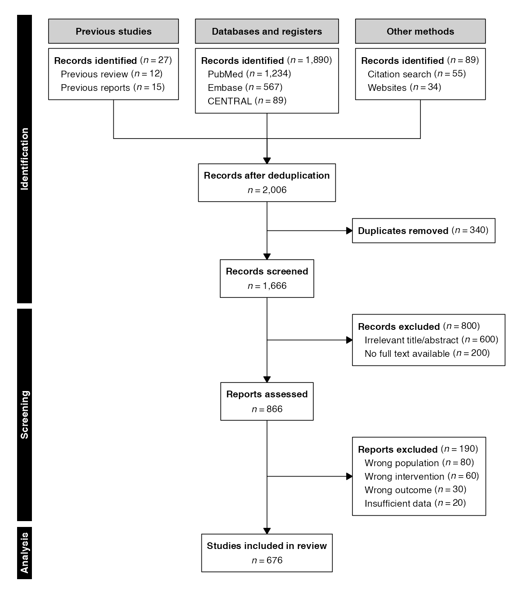
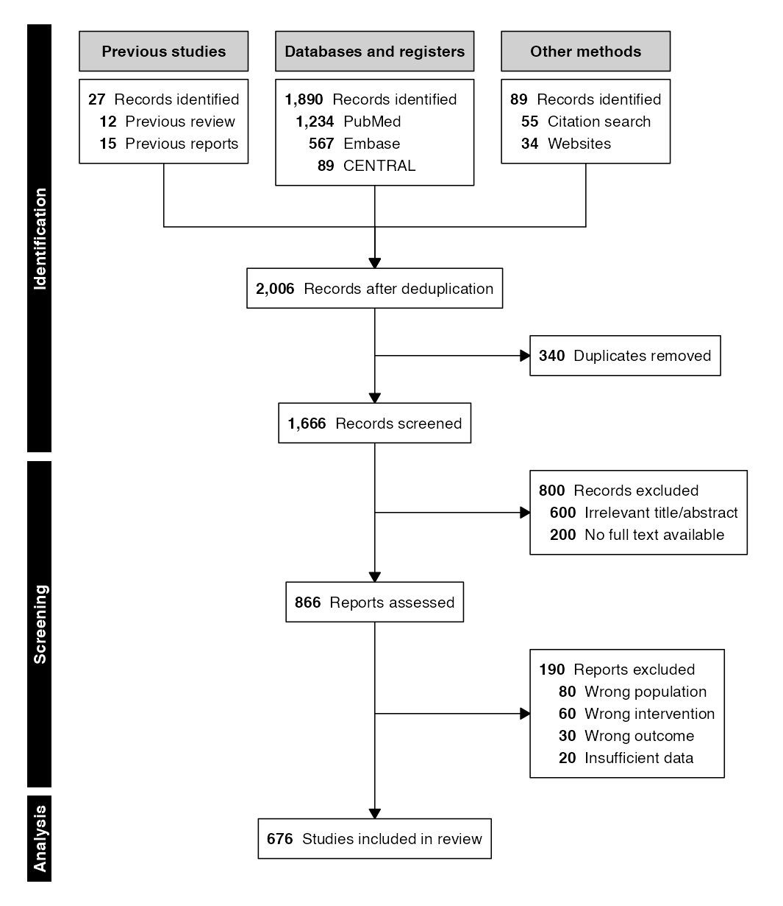
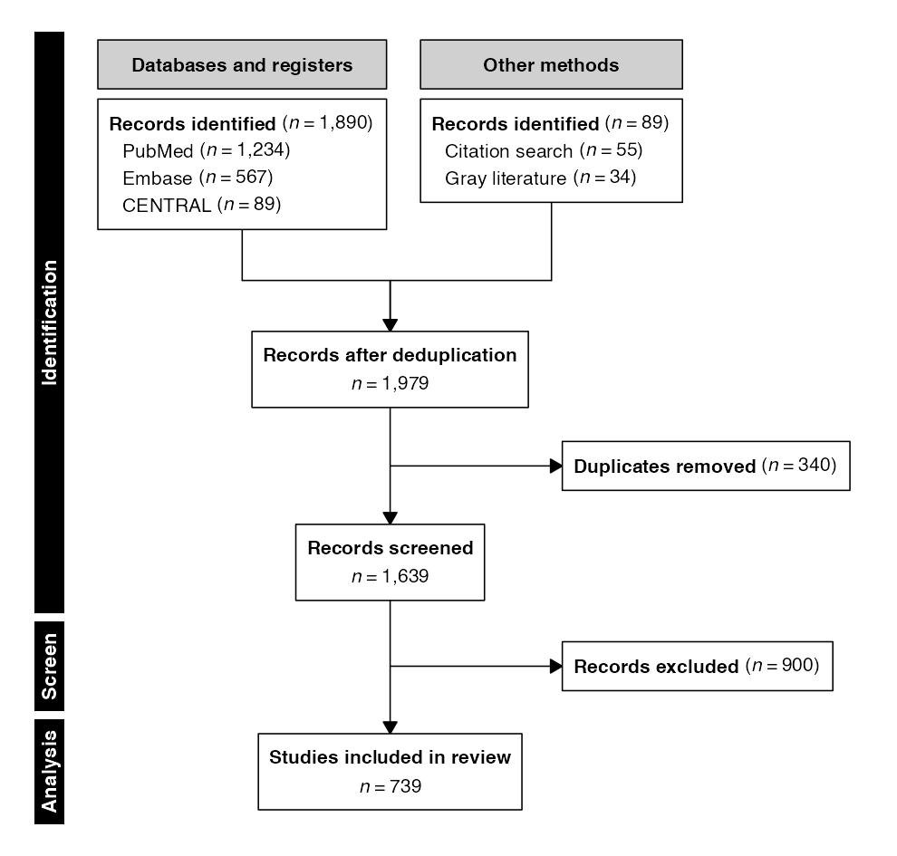
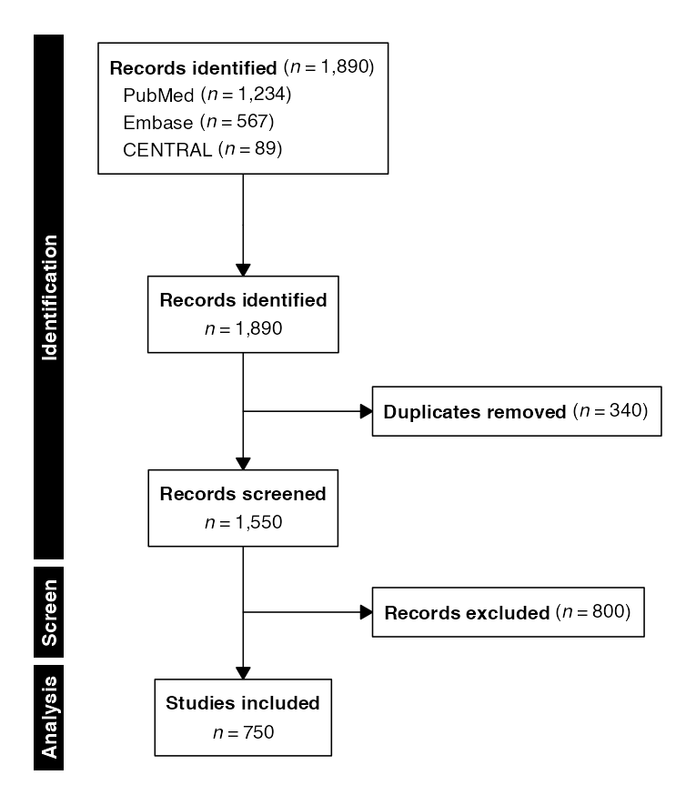
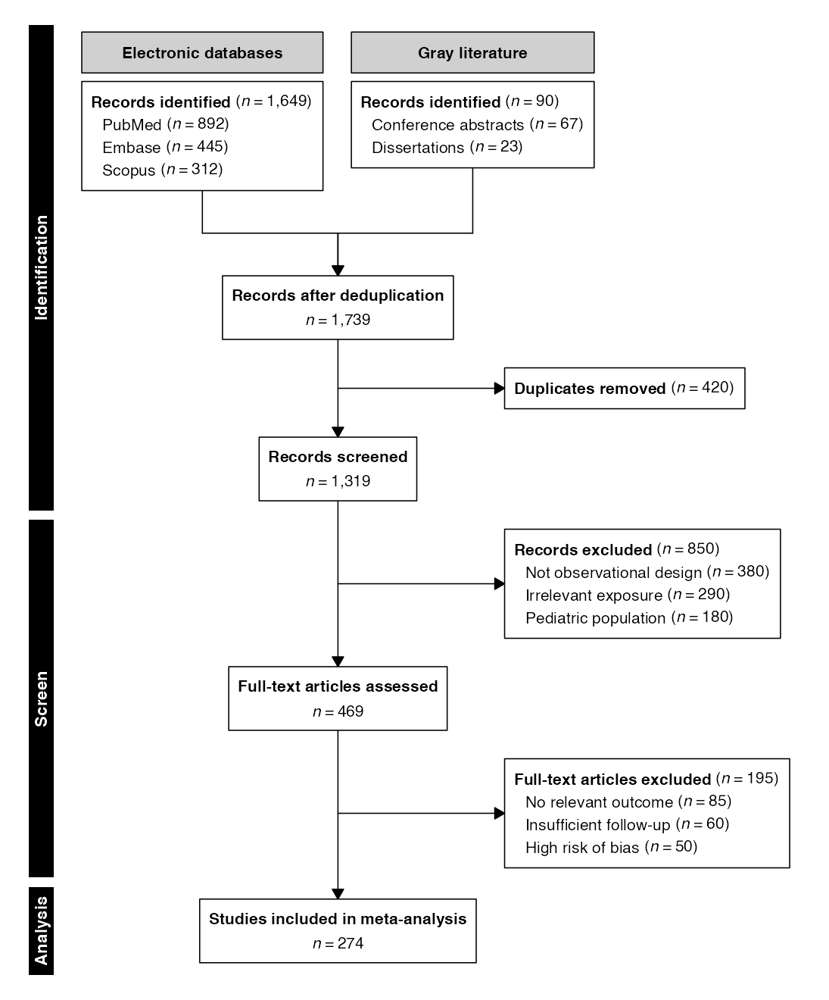

Systematic reviews and meta-analyses synthesize evidence across multiple studies, requiring a transparent account of the literature search and selection process. The PRISMA 2020 (Preferred Reporting Items for Systematic Reviews and Meta-Analyses) statement prescribes a flow diagram with a distinctive structure: multiple parallel identification streams converge into a single screening flow, with progressive exclusions at each stage. The MOOSE (Meta-analysis of Observational Studies in Epidemiology) guidelines follow a similar pattern for observational evidence synthesis.
In selecta, systematic review diagrams are built around
the following core functions:
| Function | Purpose |
|---|---|
sources() |
Define parallel identification streams (the entry
point, replacing enroll()) |
combine() |
Merge streams into a single flow after deduplication |
Thus, the systematic review pipeline adheres to the following basic structure:
sources(...) |>
phase("Identification") |>
combine(label) |>
exclude(label, n, reasons) |>
phase("Screening") |>
exclude(label, n) |>
phase("Included") |>
endpoint(label) |>
flowchart()where sources() is the entry point, and
combine() merges parallel columns into a single downstream
flow. This vignette demonstrates the full range of systematic review
diagrams supported by selecta.
n.b.: To ensure correct font rendering and figure sizing, the diagrams below are displayed using a vignette-only helper function (
queue_flow()) that applies recommended dimensions fromrecdims()via theragggraphics device, with the standard output function applied afterwards (flowchart()). In practice, replace thisqueue_flow()/flowchart()workflow with a call toflowsave()for equivalent printed results:Using
flowsave()ensures that the figure dimensions are always large enough to accommodate the diagram content, and it is the preferred method for saving flow diagram outputs inselecta.
Preliminaries
The examples in this vignette use manual mode exclusively, as systematic review diagrams are typically constructed from summary counts reported during the search and screening process rather than from a row-level dataset.
PRISMA — Three-Column Layout
The PRISMA 2020 flow diagram uses up to three columns to organize sources: studies from previous reviews (left), databases and registers (center), and other methods such as citation searching and gray literature (right). Each column receives a header label and one source box listing individual databases or methods with their counts.
Example 1: Full Three-Column PRISMA Diagram
The sources() function accepts named vector arguments,
where each argument defines a source group (column) and its named
elements list the individual sources:
example1 <- sources(
previous = c("Previous review" = 12, "Previous reports" = 15),
databases = c("PubMed" = 1234, "Embase" = 567, "CENTRAL" = 89),
other = c("Citation search" = 55, "Websites" = 34),
headers = c(previous = "Previous studies",
databases = "Databases and registers",
other = "Other methods")
) |>
phase("Identification") |>
combine("Records after deduplication") |>
exclude("Duplicates removed", n = 340,
included_label = "Records screened") |>
phase("Screening") |>
exclude("Records excluded", n = 800,
reasons = c("Irrelevant title/abstract" = 600,
"No full text available" = 200),
included_label = "Reports assessed") |>
exclude("Reports excluded", n = 190,
reasons = c("Wrong population" = 80,
"Wrong intervention" = 60,
"Wrong outcome" = 30,
"Insufficient data" = 20)) |>
phase("Analysis") |>
endpoint("Studies included in review")
flowchart(example1)
The headers argument maps group names to display labels
for the column headers. If omitted, the argument names are title-cased
and used directly (e.g., databases becomes
“Databases”).
The combine() function inserts an inverted-Y convergence
arrow connecting the parallel source columns into a single downstream
node. All subsequent pipeline steps operate on the merged record
pool.
Example 2: Three-Column Count-First Layout
Like other diagram types, convergence-style diagrams can also be formatted to have counts displayed before the category title.
flowchart(example1, count_first = TRUE)
PRISMA — Two-Column Layout
Many systematic reviews search only databases and one additional source category. A two-column layout omits the “Previous studies” column:
Example 3: Two-Column Sources
example3 <- sources(
databases = c("PubMed" = 1234, "Embase" = 567, "CENTRAL" = 89),
other = c("Citation search" = 55, "Gray literature" = 34),
headers = c(databases = "Databases and registers",
other = "Other methods")
) |>
phase("Identification") |>
combine("Records after deduplication") |>
exclude("Duplicates removed", n = 340,
included_label = "Records screened") |>
phase("Screen") |>
exclude("Records excluded", n = 900) |>
phase("Analysis") |>
endpoint("Studies included in review")
flowchart(example3)
PRISMA — Single-Column Layout
For simple reviews that search a single set of databases without
grouping, sources() accepts individual scalar arguments.
These are consolidated into a single source box with no column
header:
Example 4: Flat Source List
example4 <- sources(PubMed = 1234, Embase = 567, CENTRAL = 89) |>
phase("Identification") |>
combine("Records identified") |>
exclude("Duplicates removed", n = 340,
included_label = "Records screened") |>
phase("Screen") |>
exclude("Records excluded", n = 800) |>
phase("Analysis") |>
endpoint("Studies included")
flowchart(example4)
In this layout, no column headers are rendered and the source box appears as a single centered node above the convergence point.
MOOSE — Observational Meta-Analysis
The MOOSE (Meta-analysis of Observational Studies in Epidemiology)
guidelines prescribe a flow diagram structurally similar to PRISMA,
tailored for observational evidence synthesis. The same
sources() and combine() functions are used;
only the labels and exclusion reasons reflect the observational
context:
Example 5: MOOSE Flow Diagram
example5 <- sources(
databases = c("PubMed" = 892, "Embase" = 445, "Scopus" = 312),
gray = c("Conference abstracts" = 67, "Dissertations" = 23),
headers = c(databases = "Electronic databases",
gray = "Gray literature")
) |>
phase("Identification") |>
combine("Records after deduplication") |>
exclude("Duplicates removed", n = 420,
included_label = "Records screened") |>
phase("Screen") |>
exclude("Records excluded", n = 850,
reasons = c("Not observational design" = 380,
"Irrelevant exposure" = 290,
"Pediatric population" = 180),
included_label = "Full-text articles assessed") |>
exclude("Full-text articles excluded", n = 195,
reasons = c("No relevant outcome" = 85,
"Insufficient follow-up" = 60,
"High risk of bias" = 50)) |>
phase("Analysis") |>
endpoint("Studies included in meta-analysis")
flowchart(example5)
Source Group Structure
The sources() function distinguishes between two input
patterns based on the structure of its arguments:
| Pattern | Input | Layout | Headers |
|---|---|---|---|
| Flat | Scalar named arguments | Single column, no header | None |
| Grouped | Named vector arguments | One column per group | Auto or custom |
Flat sources (e.g.,
sources(PubMed = 1234, Embase = 567)) treat each argument
as an individual database. All sources are consolidated into a single
box.
Grouped sources (e.g.,
sources(databases = c("PubMed" = 1234, "Embase" = 567)))
treat each argument as a group. The argument name identifies the group,
and its named elements list the individual databases within that group.
Each group is rendered as a separate column with an optional header.
Up to three groups are supported, matching the three-column PRISMA
2020 template. The headers argument provides custom display
labels; when omitted, group names are title-cased automatically.
Saving to File
The flowsave() function saves the diagram to a file
(PDF, PNG, SVG, or TIFF) with auto-computed dimensions:
Explicit dimensions override the automatic calculation:
flowsave(example1, "prisma_3col.pdf", width = 10, height = 12)All visual parameters accepted by flowchart() are also
accepted by flowsave():
flowsave(example1, "prisma_poster.pdf",
cex = 1.1, cex_side = 0.85, cex_phase = 1.1)Further Reading
- Enrollment Diagrams: CONSORT, STROBE, and STARD diagrams with permanent parallel arms
- Split-and-Recombine Diagrams: Hybrid topologies for screening validation and exposure classification
- Advanced Workflows: Factorial (nested-split) designs and hierarchical exclusion reasons
- Graphviz Export: DOT output for Graphviz/DiagrammeR rendering